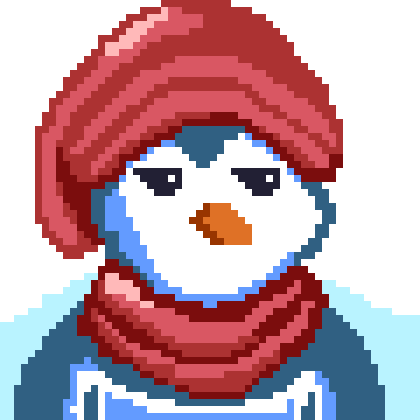

NobodyAsk
"No hay alegría de vivir sin desesperación de vivir"
ALBERT CAMUS

Soy un joven estudiante unirsitario apacionado
de las artes, musica, anime y videojuegos, que cada día busca mejorar
Mi formación academica basica se llevo acabo en la escuela primaria 13 de Septiembre
en el municipio de San Mateo tequixquiac
Posteriormente mi epoca de secundaria la vivi en tres instituciones diferentes
en las que respectivamente curse más o menos un año en cada una.
Fueron la escuela Telesecundaria Miguel Hidalgo y Costilla, la Escuela Secundaria Tecnica Núm.28
y por último la Escuela Secundaria Tecnica Núm. 51
Actualmente me ecuentro cursando la Licenciatura de Diseño de la Comunicación Gráfica en la
Universidad Autónoma Metropolitana Azcapotzalco.
Mis gustos son algo variados
en cuanto a musica mis generos favoritos son el Rock, el indie,
la Electrónica y el Pop.
Me gustan las series de romance y acción.
Mi banda favorita de toda la vida es Linkin Park,
auqne toros artistas que me gustan son
Robbie Williams, Deftones,Cage the elephant, entre otros.